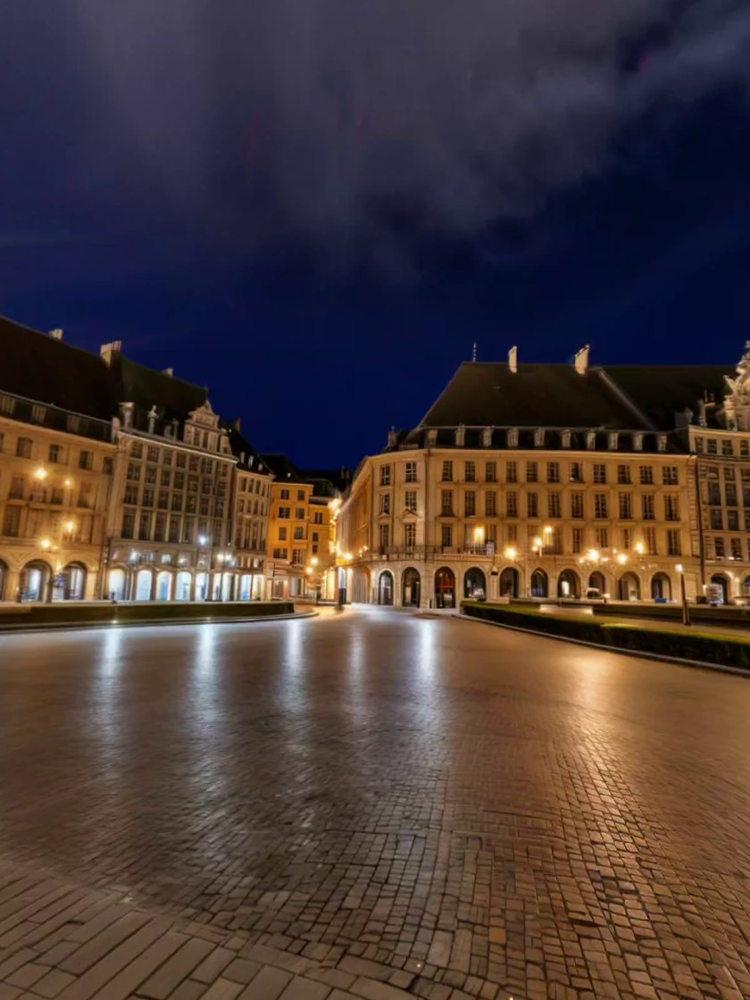
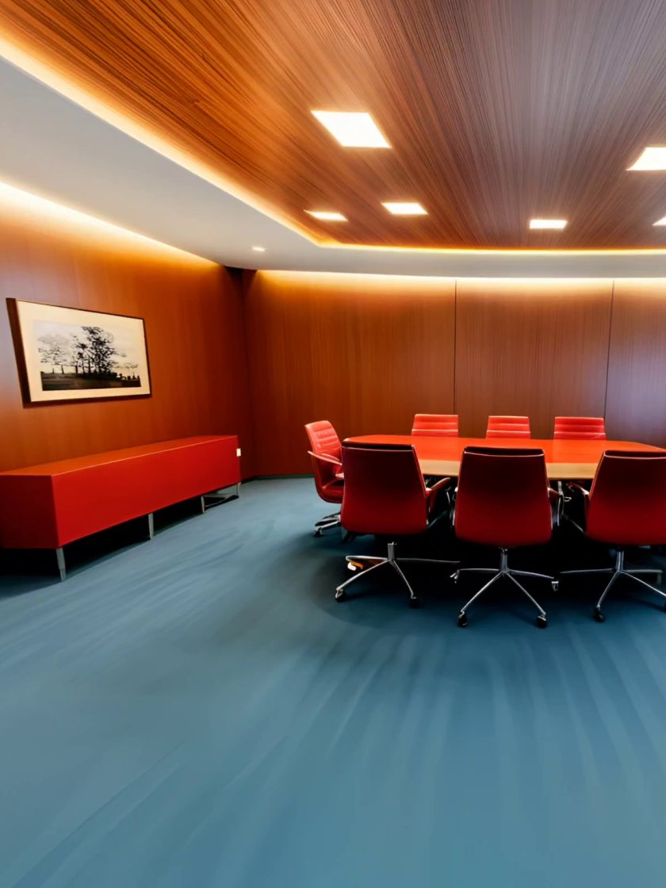

Concept
Your room, with a way out.
Pinch a window into the wall of your real room. Behind it is another world. Step through, and mixed reality becomes VR.
Mixed reality
RoomPinch
VRWorld
How it works
Three steps.
!
Step 1
Pinch to open a window.
Two pinches set the corners. The wall inside the frame turns into a city square.
!
Step 2
Step through.
The window grows around you until the room is gone.
!
Step 3
Switch worlds, or come back.
One tap changes the world. A window back home shows your real room.
Worlds
Behind the window.
#01City square

Night, lamplight on wet stone.
#02Open sky
Clouds over still water.
#03Office

A warm room to work in.